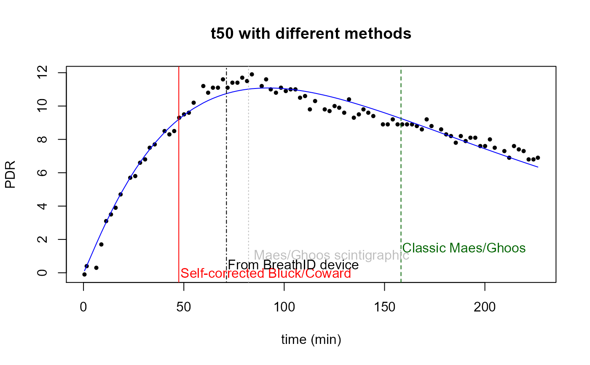
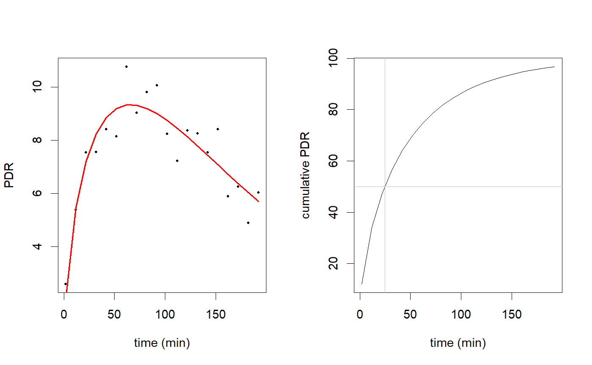
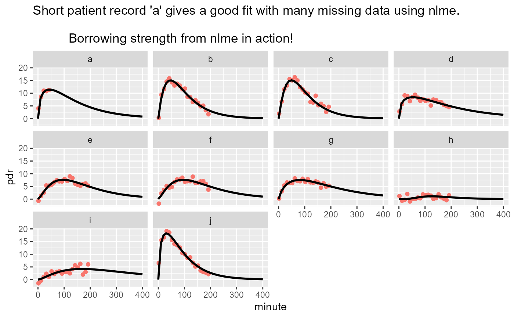

Function to fit PDR time series data to exponential-beta function as given in:
Maes, B. D., B. J. Geypens, Y. F. Ghoos, M. I. Hiele, and P. J. Rutgeerts. 1998. 13C-Octanoic Acid Breath Test for Gastric Emptying Rate of Solids. Gastroenterology 114(4): 856-50
Sanaka M, Nakada K (2010) Stable isotope breath test for assessing gastric emptying: A comprehensive review. J. Smooth Muscle Research 46(6): 267-280
Bluck L J C and Coward W A 2006 Measurement of gastric emptying by the C-13-octanoate breath test --- rationalization with scintigraphy Physiol. Meas. 27 279?89
For a review, see
Bluck LJC (2009) Recent advances in the interpretation of the 13C octanoate breath test for gastric emptying. Journal of Breath Research, 3 1-8
exp_beta(minute, dose, m, k, beta)
| minute | vector of time values in minutes |
|---|---|
| dose | in mg |
| m | efficiency |
| k | time constant |
| beta | form factor |
Values and gradients of estimated PDR for use with nls and nlme
The function is defined as
exp_beta = function(minute,dose,m,k,beta) { m*dose*k*beta*(1-exp(-k*minute))^(beta-1)*exp(-k*minute) }
At minute == 0, the function behaves like a polynomial with degree (beta-1).
In the example below, data and fit are plotted with standard R graphics.
The S3 method plot.breathtestfit provides ggplot2 graphics.
start = list(m=20,k=1/100,beta=2) # fit to real data set and show different t50 results sample_file = btcore_file("350_20043_0_GER.txt") # minute 0 must be removed to avoid singularity breath_id = read_breathid(sample_file) data = subset(breath_id$data, minute >0) sample_nls = nls(pdr~exp_beta(minute, 100, m, k, beta), data = data, start = start) data$pdr_fit_bluck=predict(sample_nls) plot(data$minute, data$pdr, pch=16, cex=0.7, xlab="time (min)", ylab="PDR", main="t50 with different methods")t50 = t50_bluck_coward(coef(sample_nls)) t50_maes_ghoos = t50_maes_ghoos(coef(sample_nls)) t50scint = t50_maes_ghoos_scintigraphy(coef(sample_nls)) abline(v = t50, col = "red")# simulated data set dose = 100 set.seed(4711) # do not use minute 0, this gives singular gradients # if required, shift minute = 0 by a small positive amount, e.g. 0.1 # create simulated data pdr = data.frame(minute=seq(2, 200, by = 10)) pdr$pdr = exp_beta(pdr$minute, 100, start$m, start$k, start$beta) + rnorm(nrow(pdr), 0, 1) par(mfrow = c(1, 2)) # plot raw data plot(pdr$minute, pdr$pdr, pch=16, cex=0.5, xlab = "time (min)",ylab = "PDR") # compute fit pdr_nls = nls(pdr~exp_beta(minute, 100, m, k, beta), data = pdr, start = start) # compute prediction pdr$pd_rfit = predict(pdr_nls) lines(pdr$minute, pdr$pd_rfit, col="red", lwd=2) # plot cumulative plot(pdr$minute, cum_exp_beta(pdr$minute,100,coef(pdr_nls)), type="l", xlab = "time (min)", ylab = "cumulative PDR")# show t50 t50 = t50_bluck_coward(coef(pdr_nls)) tlag = tlag_bluck_coward(coef(pdr_nls)) abline(v = t50, col = "gray")# create simulated data from several patients pdr1 = data.frame(patient = as.factor(letters[1:10])) pdr1$m = start$m*(1 + rnorm(nrow(pdr1), 0, 0.1)) pdr1$k = start$k*(1 + rnorm(nrow(pdr1), 0, 0.3)) pdr1$beta = start$beta*(1 + rnorm(nrow(pdr1), 0, 0.1)) pdr1 = merge(pdr1, expand.grid(minute = seq(2, 200, by = 10), patient = letters[1:10])) pdr1 = pdr1[order(pdr1$patient, pdr1$minute), ] # simulated case: for patient a, only data up to 50 minutes are available pdr1 = pdr1[!(pdr1$patient == "a" & pdr1$minute > 50),] set.seed(4711) pdr1$pdr = with(pdr1, exp_beta(minute, 100, m, k, beta) + rnorm(nrow(pdr1), 0, 1)) # compute nls fit for patient a only: fails # the following line will produce an error message # \donttest{ pdr_nls = try(nls(pdr~exp_beta(minute, 100, m, k, beta), data=pdr1, start=start, subset = patient=="a"))#> Warning: NaNs wurden erzeugt#> Error in qr.default(.swts * gr) : #> NA/NaN/Inf in externem Funktionsaufruf (arg 1)stopifnot(class(pdr_nls) == "try-error") # } # use nlme to fit the whole set with one truncated record suppressPackageStartupMessages(library(nlme)) pdr_nlme = nlme(pdr~exp_beta(minute,100,m,k,beta), data = pdr1, fixed = m+k+beta~1, random = m+k+beta~1, groups = ~patient, start = c(m = 20, k = 1/100, beta = 2)) coef(pdr_nlme)#> m k beta #> a 21.999 0.008962 1.486 #> b 20.389 0.014743 1.983 #> c 20.003 0.015422 2.123 #> d 22.037 0.006304 1.398 #> e 17.453 0.009322 2.432 #> f 17.852 0.009003 2.351 #> g 20.306 0.007039 1.769 #> h 1.965 0.013929 5.710 #> i 16.587 0.005433 2.496 #> j 22.178 0.014617 1.564pred_data = expand.grid(minute = seq(0, 400, 10), patient = letters[1:10]) pred_data$pdr = predict(pdr_nlme, newdata = pred_data) suppressPackageStartupMessages(library(ggplot2)) ggplot() + geom_point(data = pdr1, aes(x = minute, y = pdr, color = "red")) + geom_line(data = pred_data, aes(x = minute, y = pdr), color = "black", size=1) + ggtitle("Short patient record 'a' gives a good fit with many missing data using nlme.\n Borrowing strength from nlme in action!")+ facet_wrap(~patient) + theme(legend.position="none")